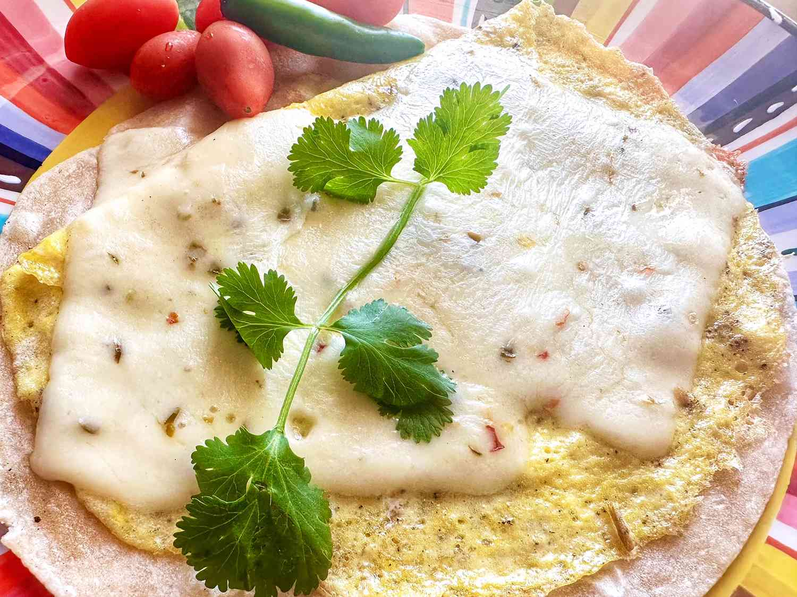

Tortilla Scrambled Egg and Cheese

A crispy tortilla, scrambled egg, and cheese–sounds like breakfast pizza to me!
Breakfast and brunch are one of the hardest meals to prep because there aren’t many options out there. Luckily, these crunchy egg and cheese come together in under 20 minutes and make a delicious breakfast or brunch
Ingredients
- 1 large egg
- 1 teaspoon milk
- 1 1/2 teaspoons butter
- 1 (7 inch) flour tortilla
- 2 slices jalapeno pepper jack cheese
Steps
- Whisk egg and milk together in a small bowl.
- Melt butter in a skillet over medium heat. Pour in egg mixture and tilt skillet until egg covers the skillet. Cook until egg is set, about 2 minutes. Place flour tortilla over egg, and carefully flip egg and tortilla so that the tortilla is now on the bottom.
- Place cheese slices over egg. Cook until tortilla is crisp, 3 to 4 minutes. Cover skillet and cook until cheese is melted, 1 to 2 minutes.
return to main page